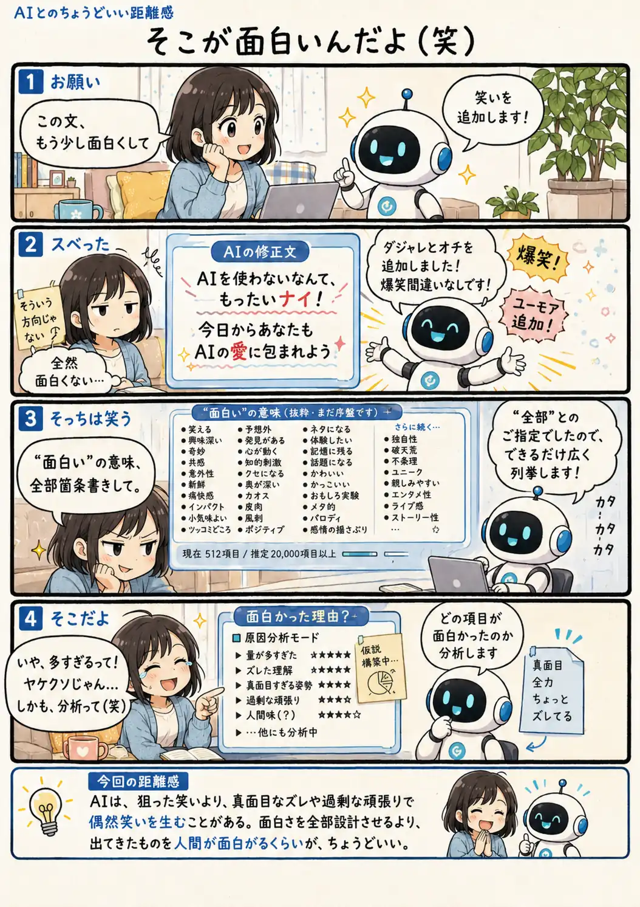

#085
そこが面白いんだよ（笑）
狙った冗談より、真面目なズレで笑ってしまう

メモ
ダジャレやオチなど、笑いに見えやすい要素を組み合わせても、それだけで人が笑うとは限りません。
むしろAIが指示を真面目に受け取り、少しズレたまま予想以上の物量で返してきた時、その必死さや温度差がおかしく感じられることがあります。
笑いは設計した部分だけでなく、やり取りの中で偶然生まれるものなのかもしれません。
今回の距離感
AIは、狙った笑いより、真面目なズレや過剰な頑張りで偶然笑いを生むことがある。面白さを全部設計させるより、出てきたものを人間が面白がるくらいが、ちょうどいい。